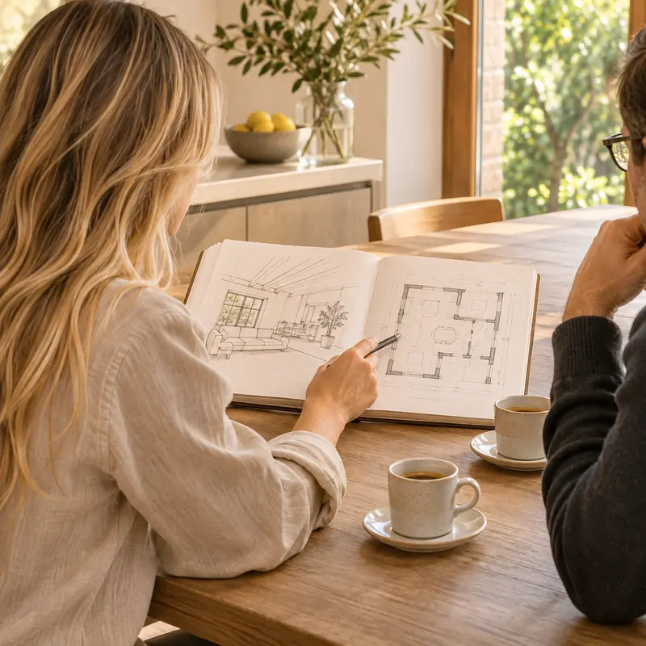
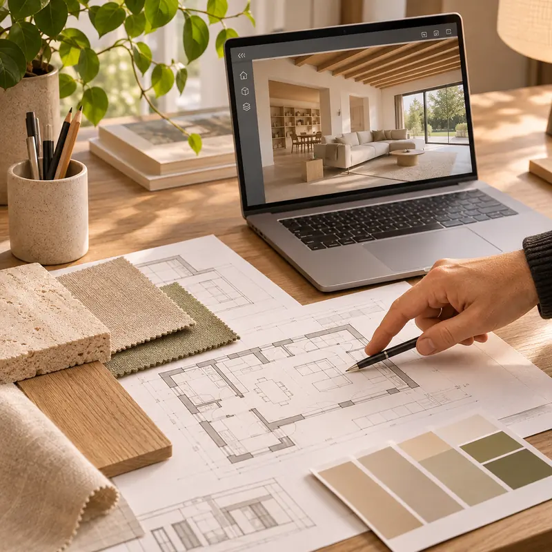
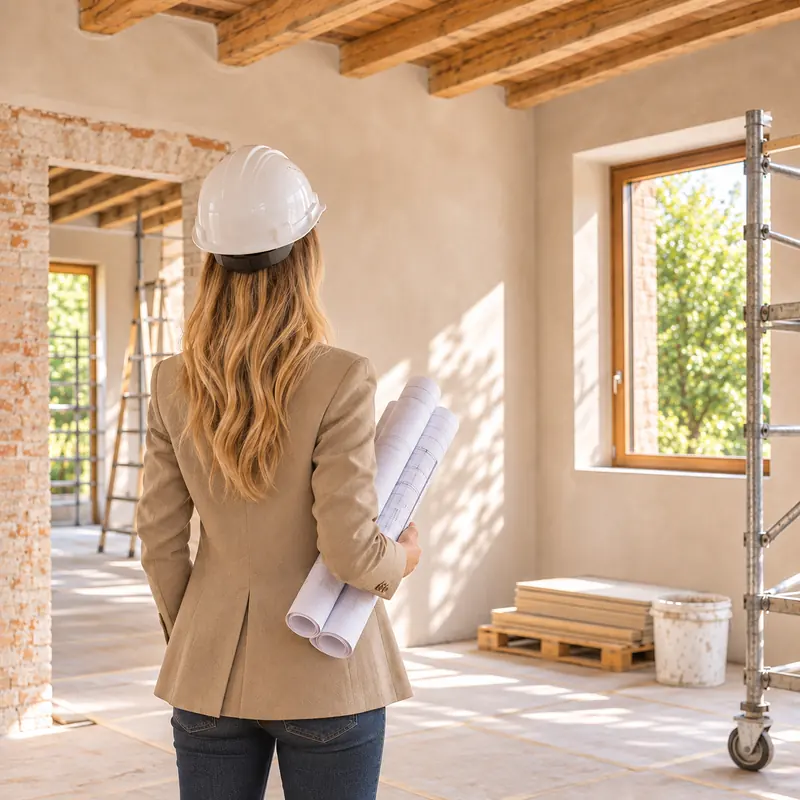

Il mio metodo
Dal primo incontro alla consegna delle chiavi: come si svolge un progetto con me, quanto costa e quanto tempo serve.
Le fasi di lavoro

Ascolto e sopralluogo
Ci incontriamo a casa tua o in studio, anche in videochiamata se preferisci. Mi racconti come vivi, cosa non funziona e cosa desideri.
Vedo l’immobile o il terreno, verifico i documenti e ti dico con franchezza cosa si può fare e con quale ordine di spesa. Questo primo incontro è gratuito.

Progetto
Rilievo, prime ipotesi, confronto. Poi il progetto definitivo, con disegni, rendering 3D, scelta di materiali e finiture e una stima dei costi dei lavori.
Nessuna scelta viene data per scontata: prima di andare avanti, ogni passaggio lo decidiamo insieme.
Pratiche e scelta dell’impresa
Preparo e presento in Comune le pratiche edilizie necessarie. Scrivo un capitolato chiaro, così i preventivi delle imprese sono confrontabili, e ti aiuto a scegliere quella giusta.

Cantiere e direzione lavori
Seguo i lavori come direttore dei lavori: sopralluoghi periodici, coordinamento delle imprese, controllo di qualità, tempi e costi.
Ci sono fino alla consegna, e anche dopo, se serve un chiarimento.
Costi indicativi
Indicazioni di massima per orientarti. Il preventivo definitivo dipende dal progetto e te lo consegno per iscritto prima di iniziare.
- Primo incontro conoscitivo
- Gratuito e senza impegno.
- Ristrutturazioni
- In genere tra il 5% e l’8% del costo dei lavori, per progetto e direzione lavori.
- Interior design
- In genere tra il 7% e il 10% del budget complessivo dell’intervento.
- Nuove costruzioni
- Preventivo dedicato dopo l’analisi del lotto e delle tue esigenze.
- Riqualificazione energetica
- Preventivo dedicato dopo il sopralluogo, anche diviso per fasi.
- Consulenze specifiche
- Preventivo su richiesta, in base all’impegno previsto.
Domande frequenti
Quanto costa una consulenza di un architetto?
Il primo incontro conoscitivo è gratuito: serve a capire cosa ti serve e se posso aiutarti. Le consulenze successive e i progetti hanno un preventivo scritto, concordato prima di iniziare.
Lavori anche fuori Mantova?
Sì. Ho lo studio a Borgo Virgilio e lavoro a Mantova e nei comuni vicini: Borgo Virgilio, Curtatone, Porto Mantovano, San Giorgio Bigarello, Bagnolo San Vito, Roncoferraro, Rivalta sul Mincio, San Silvestro, Cerese, Suzzara, San Benedetto Po e Gonzaga. Per altre zone scrivimi e ne parliamo.
Posso fare una consulenza online?
Sì, se preferisci possiamo sentirci in videochiamata, per esempio per un primo confronto o per una consulenza su interni e arredi. Per i sopralluoghi, ovviamente, vengo di persona.
Architetto o geometra: chi mi serve?
Per pratiche semplici un geometra può bastare. Se la casa va ripensata negli spazi, nell’estetica o nell’efficienza, o se l’edificio è vincolato, un architetto offre una visione progettuale più ampia.
Chi presenta le pratiche edilizie in Comune?
Per la maggior parte degli interventi serve un tecnico abilitato che prepari e firmi la pratica. Me ne occupo io, come parte del progetto.
Mi aiuti a scegliere l’impresa?
Sì. Preparo un capitolato chiaro, così i preventivi delle imprese sono confrontabili, e ti aiuto a valutarli.
Vuoi capire se il tuo progetto è fattibile?
Parliamone: il primo incontro serve proprio a questo, ed è gratuito.
Oppure chiamami al 340 409 2130, lunedì–sabato, 8:30–18:30.